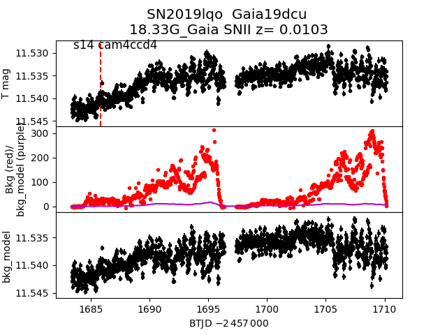
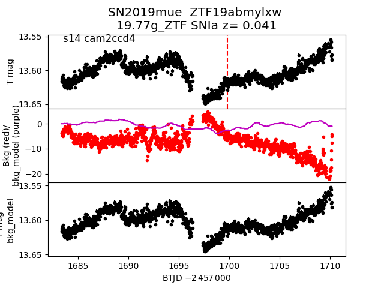
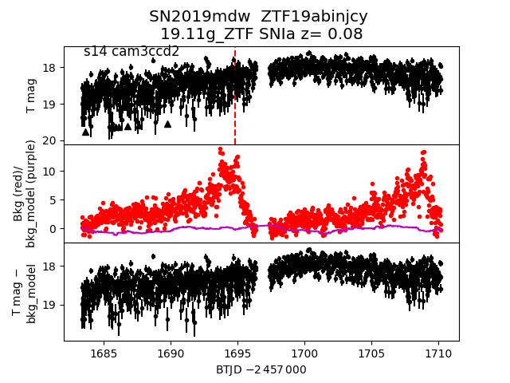
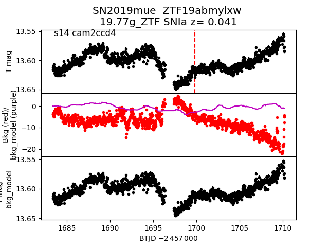
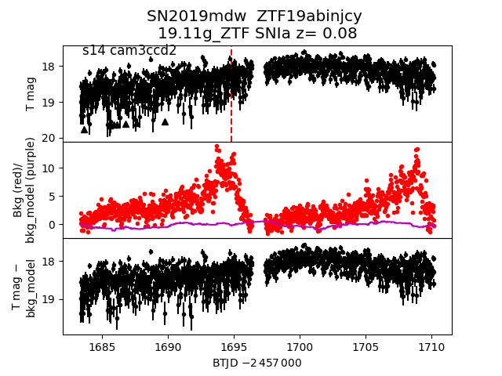
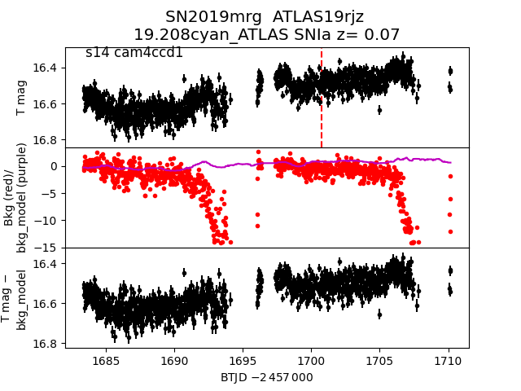
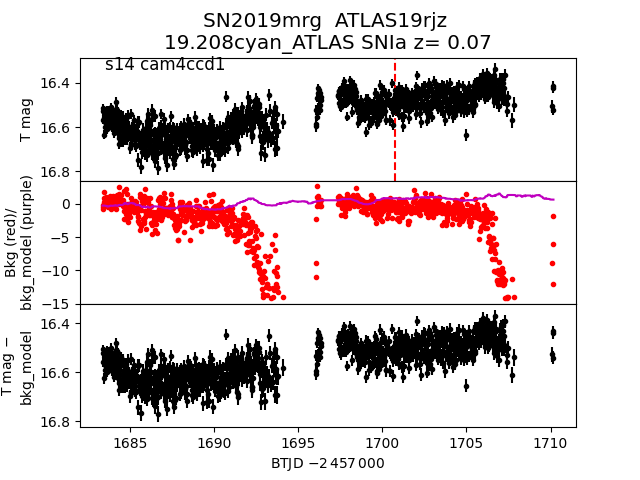
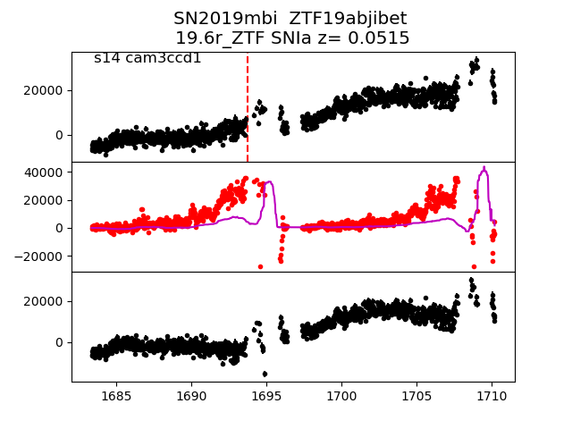
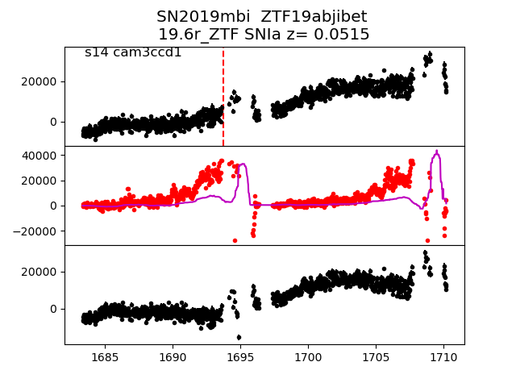

sector14 supernovae (10 total)
Each figure has three panels. The top panel shows the transient light curve, the middle panel shows the local background (estimated in an annulus), and the bottom panel shows a "background-model corrected" light curve. Details about the background model are in the README.
The vertical red line marks the time of discovery reported to TNS. Other useful metadata from TNS is in the figure title.
Note that the top and bottom panel are in magnitudes, while the middle panel is in differential flux units. The magnitudes are calibrated to the flux in the reference image used for image subtraction. Thus, flux from the host galaxy is included in these magnitudes.
3-sigma upper limits are plotted as triangles with no errorbars. A typical limiting magnitude is 19.6 in 30 minutes or 18.4 in 200 seconds (for low backgrounds).
The links allow you to download the light curve data as a text file.
More details in the README.
2019lqo

2019mku
 2019mue

2019mdw

2019lrq
2019mue

2019mdw

2019lrq
 2019ncd
2019ncd
 2019mtz
2019mtz
 2019mrg

2019mvj
2019mrg

2019mvj
 2019mbi

2019mbi
